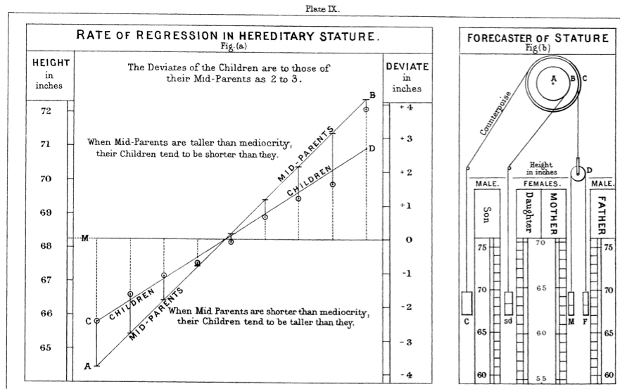
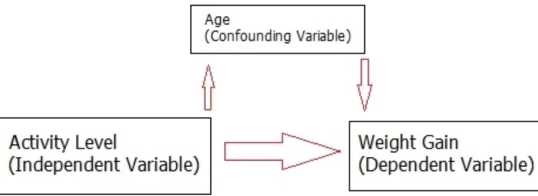
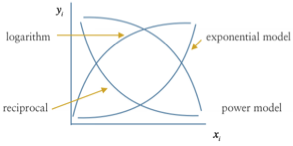
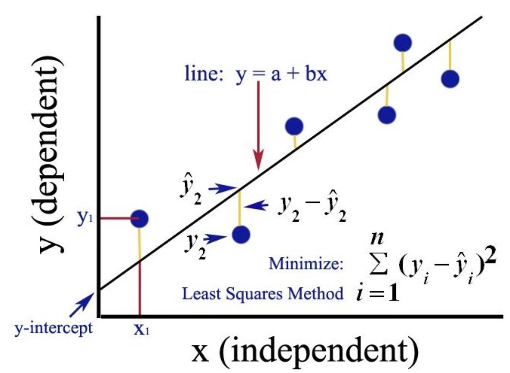
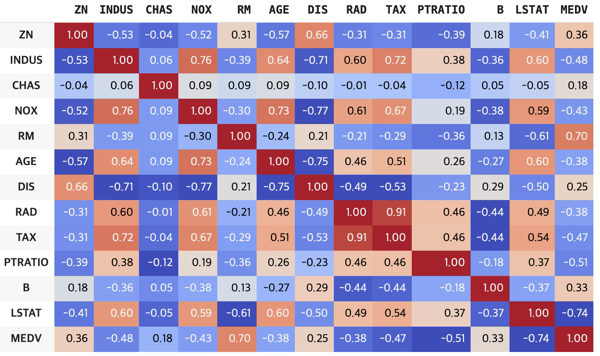
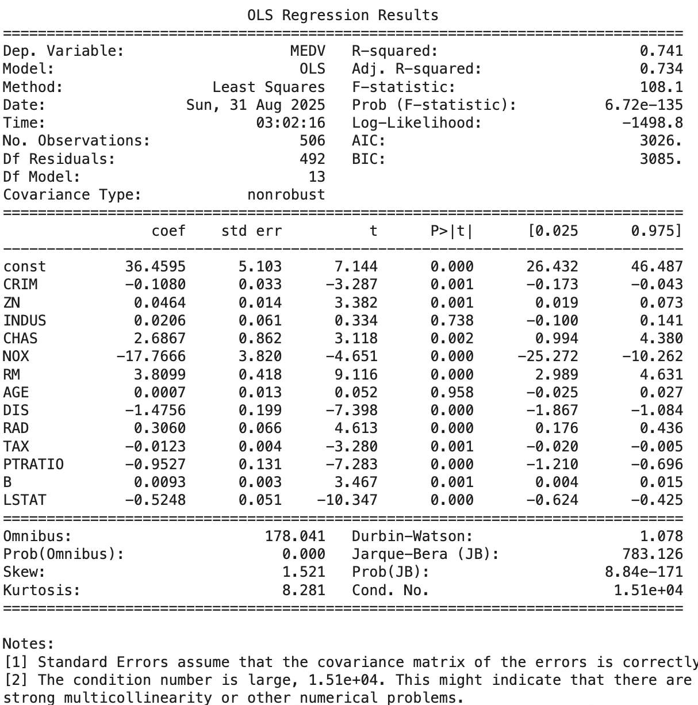

회귀분석 1. 개념&추정
chapter 1. 회귀분석 개념
1. 역사
영국의 통계학자이자 유전학자인 Francis Galton(1822–1911) 은 식물 실험, 특히 완두콩(sweet pea) 씨앗 무게의 유전을 관찰하면서 ”평균으로의 회귀(regression toward the mean)” 현상에 주목하였다.
큰 씨앗에서 나온 후대 씨앗은 크지만 부모만큼 극단적으로 크지 않고 평균에 더 가까워지는 경향을 보이며, 작은 씨앗에서 나온 후대 씨앗 역시 극단적으로 작지 않고 평균 쪽으로 이동하는 경향을 보인다.
Galton은 이러한 관찰을 인간의 키(height) 연구로 확장하였다. 그는 수천 쌍의 부모–자녀 키 자료를 수집하였고, 이 과정에서 ”부모 평균키”를 다음과 같이 정의하였다.
\(\frac{FatherHeight + 1.08 \times MotherHeight}{2}\), 이는 어머니가 아버지보다 평균적으로 키가 작다는 점을 보정하기 위하여, 어머니 키에 1.08배 보정 계수를 곱한 것이다.
부모 평균키와 자녀 키를 교차표와 산점도로 정리한 결과, 다음과 같은 패턴이 나타났다.
부모 키가 평균 수준에 가까운 경우, 자녀 키는 직선적 비례 관계를 보인다.
부모 키가 매우 크거나 작은 경우, 자녀 키는 부모만큼 극단적이지 않고 전체 평균 신장 쪽으로 더 가까워진다.
Galton은 이 현상을 회귀(regression)라고 명명하였다. 이는 원래 평균으로 되돌아가는 경향을 의미하며, 여기에서 오늘날의 회귀분석 용어가 비롯되었다.

2. 회귀모형
함수관계
측정형 변수들 사이의 함수적 관계에 관심을 갖는다. 함수관계 중에서도 해석이 가장 용이한 형태는 직선 함수관계이다. 상관분석은 변수들 간의 직선적 연관성을 파악하지만, 원인과 결과의 방향성을 고려하지 않는다.
반면, 회귀분석은 변수들 간의 관계를 설명할 때 방향성을 명확히 한다. 즉, 어떤 변수를 독립변수(independent variable, input) 로 두어 결과에 영향을 주는 원인으로 간주하고, 이에 대응하는 결과 변수를 종속변수(dependent variable, output, 또는 목표변수 target variable) 로 설정한다. 회귀분석은 이러한 독립변수와 종속변수 간의 함수적 관계를 모형화하고 해석하는 방법이다.
함수 형태 중 선형을 가장 선호
\(y = a + b_{1}X_{1} + b_{2}X_{2} + ... + b_{p}X_{p} + e\)
회귀분석에서는 여러 함수 형태 중에서 선형 함수(linear function) 를 가장 선호한다. 선형 모형이 선호되는 이유는 해석이 용이하기 때문이다. 회귀계수는 함수의 기울기에 해당하므로, 예측변수가 한 단위 증가(또는 감소)할 때 목표변수가 얼마나 변화하는지를 단위로써 직접적으로 해석할 수 있다.
비선형 함수 형태의 모형이라 하더라도, 적절한 변환 을 통해 선형 함수로 변환할 수 있다. 예를 들어, 로그 변환은 대표적인 방법이다.
Cobb-Douglas 생산함수 \(Q = \alpha L^{\beta}L^{\lambda}u\) (\(Q\)=생산량, \(k\)=자본, \(L\)=투입노동, \(\alpha,\beta,\lambda\) 모수, \(u\)오차항) - 양변을 로그 변환하면 \(ln(Q) = ln(\alpha) + \beta ln(L) + \lambda ln(K) + ln(u)\)
인구성장모형 \(P = \alpha e^{\beta T}u\) (\(P\)= 총인구수, \(T\)=시간, \(\alpha,\beta\) 모수) 모두 양변에 로그를 취하여 선형함수로 만들 수 있음 \(ln(P) = ln(\alpha) + \beta T + ln(u)\)
따라서 회귀분석에서는 선형 모형을 기본 틀로 두고, 필요할 경우 비선형 모형도 적절한 변환을 통해 선형 모형으로 분석하는 것이 가능하다.
목표변수(\(Y\))와 분포 가정
회귀분석에서 목표변수(종속변수) 는 하나이며, 원칙적으로 정규분포를 따르는 측정형 변수이다. 목표변수가 정규분포를 따르지 않는 경우에는 연결함수를 이용하여 종속변수를 정규분포로 변환한 후 선형 회귀모형을 적용한다. 특히, 종속변수가 이산형인 경우에는 적합한 연결함수를 사용한다.
예를 들어, 종속변수가 성공/실패 와 같은 이분형 변수인 경우, 로짓 함수(logit function) 를 연결함수로 사용한다.
\(\text{logit}(p) = \ln\left( \frac{p}{1 - p} \right)\). 여기서 \(p = P(Y = 1)\)이며, Y는 성공(1) 또는 실패(0) 값을 갖는 이항 변수이다.
이 경우 모형은 다음과 같이 표현된다.
\[\ln\left( \frac{p}{1 - p} \right) = \beta_{0} + \beta_{1}X_{1} + \cdots + \beta_{k}X_{k}\]
즉, 성공 확률 p 자체를 직접 모형화하는 대신, 성공 확률의 로그 오즈(log-odds)를 선형함수로 모형화하는 방식이다.
회귀분석과 일반화 선형모형(GLM)
회귀분석은 두 변수 간의 단순한 상관관계를 넘어, 원인과 결과의 방향성을 고려하여 함수적 관계를 설정하는 방법이다. 가장 기본적인 회귀모형은 선형 회귀모형으로, 종속변수가 정규분포를 따른다고 가정한다.
그러나 현실에서 다루는 종속변수가 항상 정규분포를 따르는 것은 아니다. 예를 들어, 환자의 치료 성공 여부(성공/실패), 소비자의 구매 여부(구매/비구매)와 같이 두 가지 값만을 가지는 이항형 변수는 정규분포 가정과 맞지 않는다. 교통수단 선택과 같은 범주형 자료, 혹은 일정 기간 동안 발생한 사고 건수나 방문 횟수처럼 계수형 자료 역시 마찬가지이다. 이러한 경우 기존의 선형 회귀모형을 그대로 적용하면 예측 확률이 0과 1 사이를 벗어나거나, 분산 구조가 잘못 추정되는 등의 문제가 생긴다.
이러한 한계를 극복하기 위해 도입된 개념이 연결함수이다. 연결함수는 종속변수를 직접 선형식으로 표현하지 않고, 종속변수의 기댓값을 적절히 변환한 후 이를 선형예측자와 연결한다. 예를 들어, 종속변수가 이항형인 경우에는 성공 확률 p 자체를 선형식으로 모형화할 수 없다. 대신, 성공 확률을 변환한 로짓 함수 \(\text{logit}(p) = \ln\left( \frac{p}{1 - p} \right)\)를 사용하면, 변환된 값은 실수 전체 범위를 가지므로 선형예측자와 자연스럽게 연결할 수 있다. 따라서 이항 로지스틱 회귀모형은 \(\ln\left( \frac{p}{1 - p} \right) = \beta_{0} + \beta_{1}X_{1} + \cdots + \beta_{k}X_{k}\)의 형태를 갖는다. 이 경우 회귀계수는 독립변수가 한 단위 변할 때 성공 확률의 로그 오즈가 얼마나 변하는지를 의미한다.
비슷한 방식으로, 종속변수가 어떤 사건의 발생 횟수처럼 계수형 자료라면 포아송 분포를 가정하고 로그 함수를 연결함수로 사용한다. 예를 들어, 평균 발생 건수를 \(\mu\)라고 할 때, \(\ln(\mu) = \beta_{0} + \beta_{1}X_{1} + \cdots + \beta_{k}X_{k}\)로 모형화할 수 있다. 이 경우 회귀계수는 독립변수가 한 단위 변할 때 평균 발생 건수의 로그 값이 얼마나 변하는지를 나타낸다.
이처럼 종속변수의 분포에 맞는 확률분포와 연결함수를 선택하여 선형모형의 틀을 확장한 것이 바로 일반화 선형모형(GLM, Generalized Linear Model) 이다. GLM은 크게 세 가지 구성요소를 가진다. 첫째, 종속변수는 정규분포, 이항분포, 포아송분포 등 지수분포족에 속한다고 가정한다. 둘째, 독립변수들의 선형 결합을 나타내는 선형예측자(linear predictor)를 정의한다. 셋째, 종속변수의 기댓값과 선형예측자를 연결하는 연결함수를 지정한다.
이러한 체계를 통해 회귀분석은 정규분포를 따르는 연속형 종속변수에 국한되지 않고, 이산형 자료나 비정규분포 자료까지 분석할 수 있는 범용적인 모형으로 확장된다. 따라서 고전적 회귀분석은 GLM의 한 특별한 경우라 할 수 있으며, GLM은 회귀분석의 현대적 일반화라고 이해할 수 있다.
예측변수(\(X's\))는 다수이고 역시 측정형변수를 원칙으로 한다.
회귀분석에서 예측변수(독립변수) 는 다수일 수 있으며, 원칙적으로 측정형 변수를 사용한다. 예측변수가 하나인 경우를 단순회귀분석이라 하고, 두 개 이상인 경우를 다중회귀분석이라 한다.
회귀분석은 함수관계에 기반하므로, 범주형 변수는 직접 사용할 수 없다. 예를 들어, 성별(남/여), 지역(서울/대전/부산)과 같은 범주형 변수는 숫자 연속값으로 정의되어 있지 않기 때문이다. 이러한 경우 회귀분석에서는 지시변수 또는 더미변수로 변환하여 사용한다.
범주형 변수가 k개의 수준(level)을 가진다면, 회귀모형에는 k-1개의 더미변수를 포함시켜야 한다. 각 더미변수는 특정 범주에 속하면 1, 그렇지 않으면 0의 값을 갖는 이진형(binary) 변수이다. 예를 들어, 지역 변수가 세 수준(서울, 대전, 부산)을 가진다면 두 개의 더미변수를 생성하여, 각각 특정 지역 여부를 0과 1로 표시한다.
이 방식은 기준 범주를 하나 설정하고, 나머지 범주들을 해당 기준과 비교하는 형태로 해석할 수 있게 한다. 따라서 범주형 변수 역시 측정형 변수와 함께 회귀모형에 포함될 수 있다.
목표변수 \(Y\) : 수능성적, 측정형 예측변수 \(X\) : 일주일 공부시간, 더미변수 성별 \(D = 0male,1female\)이라 하자.
\(Y = a + b_{1}D + b_{2}X + b_{3}(X*D) + e\)
함수관계와 인과관계
회귀분석은 변수들 사이의 함수적 관계를 밝히는 방법이지, 인과관계를 증명하는 방법은 아니다. 회귀분석의 목적은 단지 관심의 대상이 되는 목표변수에 직선적 함수 관계를 갖는 예측변수를 찾는 데 있다. 따라서 회귀분석 결과만으로 ”A가 B를 원인적으로 변화시킨다”고 단정할 수 없다.
인과관계는 철저한 실험설계를 통해서만 확인할 수 있다. 예를 들어, ”공부 시간과 수능 성적 사이에 인과관계가 존재하는가?“라는 질문에 답하기 위해서는, 사회경제적 환경이 동일하고 학습 능력이 동일한 고등학교 3학년 학생 집단을 무작위로 선택한 뒤, 1년 동안 주당 공부 시간을 다르게 할당하여 관리하고, 이후 수능 성적을 측정해야 한다. 이렇게 외생적 요인을 통제하고 실험적으로 조작된 데이터를 수집해야만 두 변수 간의 인과관계를 명확히 밝힐 수 있다.
반면, 실제 사회과학이나 경영·경제학 연구에서 다루는 자료는 대부분 횡단면 데이터 이거나 관측 자료이다. 이런 경우에는 연구자가 직접 변수를 조작할 수 없으므로, 인과관계를 단정하기 어렵다. 대신, 다른 요인들의 영향을 최대한 통제한 상태에서 예측변수와 목표변수 사이의 함수적 관계를 추정해야 한다. 이 과정에서 중요한 역할을 하는 변수가 있다.
통제변수(control variable) : 다른 요인의 영향을 제거하기 위해 모형에 포함하는 변수
매개변수(mediator variable) : 독립변수가 종속변수에 영향을 주는 경로를 매개하는 변수
교락변수(confounding variable) : 독립변수와 종속변수 모두에 영향을 주어 관계를 왜곡시키는 변수
따라서 회귀분석을 활용할 때에는 결과를 단순히 인과적 해석으로 확대하지 않고, 함수적 관계와 통제변수의 역할을 명확히 이해하는 것이 필요하다.

회귀분석에서 중요한 개념은 교락(confounding) 이다. 교락변수는 독립변수와 종속변수 모두에 영향을 주어, 두 변수 사이의 함수관계를 왜곡할 수 있다.
운동능력(X)과 체중 증가(Y)의 관계를 알고자 할 때, 연령(Z) 이 X와 Y 모두에 영향을 주면 Z는 교락변수이다. 일반적으로 연령이 높을수록 운동능력은 낮아지고, 체중 증가는 커질 가능성이 높다. 이때 연령을 모형에 포함하지 않으면, X와 Y 사이의 순수한 함수관계가 왜곡된다. 따라서 연령을 통제변수로 포함하여 동일 연령에서의 \(X \rightarrow Y\)관계를 추정하는 것이 필요하다.
3. 통제변수 매개변수 교락변수
생략변수편의란 실제로는 종속변수 Y에 영향을 주는 중요한 변수를 회귀모형에서 누락시킴으로써, 포함된 예측변수의 회귀계수가 편의(bias) 를 가지게 되는 현상을 말한다. X는 예측변수(처치, 원인), Y는 목표변수(결과)이다.
(1) 통제변수(control variable)
모형에 포함하여 원하지 않는 변동을 제거하거나 편의를 줄이기 위해 사용하는 변수이다. 통제변수라는 말은 용도가 넓다. 실무에서는 크게 두 부류가 있다.
교락변수(진짜 통제 대상): 편의를 없애려는 목적, \(Z \rightarrow X\)이고 \(Z \rightarrow Y\)이다.
정밀도 변수: Y에만 강하게 연관되어 분산을 줄이는 변수(교락은 아님), \(Z \rightarrow Y\)이고 \(Z \nrightarrow X\)이다.
통제 효과
교락이면 포함해야 편의가 줄어든다.
정밀도 변수면 포함해도 편의는 변하지 않지만 추정의 표준오차가 줄어들 수 있다.
모형
시험점수 예측에서 ”이전 학업성취도(중간고사 점수)“는 최종점수 Y의 변동을 설명하므로 정밀도를 높이는 통제변수이다.
통제 전: \(Y = \alpha_{0} + \alpha_{1}X + e\)
통제 후: \(Y = \beta_{0} + \beta_{1}X + \beta_{2}Z + u\)
여기서 \(\beta_{1}\)은 연령 Z를 동일하게 고정했을 때 운동능력 X의 효과로 해석된다.
통제 전: 운동능력과 체중 증가 사이의 혼합된 효과, \(\alpha_{1}\).
통제 후: 같은 연령에서 운동능력의 순수 효과, \(\beta_{1}\).
(2) 매개변수(mediator)
X가 Y에 영향을 미치는 경로 중간에 위치하는 변수이다. \(X \rightarrow M \rightarrow Y\) 구조이다. ”효과가 어떻게 전달되는가?“를 설명한다.
운동량 X → ”칼로리 소모” M → 체중변화 Y. 칼로리 소모는 매개이므로 총효과 추정에서는 포함하지 않는다.
매개변수가 존재하면, 독립변수의 효과는 직접효과(매개변수를 거치지 않는 영향) 와 간접효과(매개변수를 통해 전달되는 영향) 로 분해할 수 있으며, 이 둘의 합이 총효과가 된다.
직접효과 (Direct Effect) \(X \rightarrow Y\)
M을 거치지 않고 바로 Y에 영향을 미치는 효과로 회귀식으로 표현하면, \(Y = \beta_{0} + \beta_{1}X + \beta_{2}M + u\), 여기서 \(\beta_{1}\)이 바로 직접효과이다.
간접효과 (Indirect Effect)
\(X \rightarrow M \rightarrow Y\)경로를 따라 전달되는 효과이다.
매개변수 방정식: \(M = \alpha_{0} + \alpha_{1}X + v\)
종속변수 방정식: \(Y = \beta_{0} + \beta_{1}X + \beta_{2}M + u\)
이때 간접효과는 \(\alpha_{1} \times \beta_{2}\)이다. 즉, X가 M에 영향을 주고, 그 M이 다시 Y에 영향을 주는 효과의 곱이다.
총효과 (Total Effect)
총효과는 직접효과 + 간접효과 이다. \(\beta_{1} + (\alpha_{1} \times \beta_{2})\)
X: 운동능력, M: 칼로리 소모량, Y: 체중 변화
운동능력이 직접적으로 체중 변화에 영향을 미친다면 → 직접효과
운동능력이 칼로리 소모를 증가시키고, 그 칼로리 소모가 체중 변화로 이어진다면 → 간접효과
(3) 교락변수(confounder)
X와 Y에 동시에 원인으로 작용하여 \(X \rightarrow Y\) 관계를 왜곡하는 변수이다. 교락을 통제하지 않으면 생략변수편의가 발생한다.
\(Z \rightarrow X,Z \rightarrow Y\), 또는 인과적으로 동등한 구조(공통원인).
모형: \(Y = \beta_{0} + \beta_{1}X + \beta_{2}Z + u,E(u \mid X,Z) = 0\)
Z를 포함하면 백도어 경로가 차단되어 \(X \rightarrow Y\)의 순수한 조건부 평균 효과를 추정할 수 있다.
(참고) 백도어 경로: 관심 경로 \(X \rightarrow Y\) 이외에, \(X \leftarrow Z \rightarrow Y\)처럼 뒤에서 돌아오는 경로를 의미하며, 이 경로는 교락을 유발하여, X와 Y 사이에 인과가 없는 ”가짜 상관”을 만들어낼 수 있다.
모형에서 Z를 생략한 기울기 편의: \(\text{Bias}({\widehat{\alpha}}_{1}) = \beta_{2} \cdot \frac{Cov(X,Z)}{Var(X)}\)
운동능력 X–체중증가 Y에서 연령 Z. 연령은 활동에도, 체중에도 영향 → 교락. 반드시 통제한다.
(4) 비교
운동능력 X–체중증가 Y에서 연령
연령 Z : 활동 X와 체중증가 Y의 교락 → 통제한다.
칼로리 소모 M : X의 매개 → 총효과면 제외, 직접효과면 포함.
기저체지방률 W : Y의 강한 예측자이나 X의 원인은 아님 → 정밀도 통제로 포함 가능.
병원 방문 여부 C : 활동과 연령의 공통 결과라면 콜라이더 → 통제하지 않는다.
실무 판별 체크리스트
시간 순서: 원인은 결과보다 앞서야 한다. Z가 X 이후에 발생하면 교락이 아니다(매개일 가능성).
원인성: Z가 X와 Y의 공통 원인인가? 그렇다면 교락이다.
경로 목적: 총효과를 원하면 매개를 빼고, 직접효과를 원하면 매개를 포함한다.
정밀도 변수: Z가 Y 예측력을 높이지만 X에는 원인으로 작용하지 않는가? 그렇다면 포함해도 편의는 변하지 않으나 효율은 좋아진다.
콜라이더 경계: 공통 결과나 선택 변수(병원 내 환자만 분석 등)를 통제하지 않는다.
콜라이더 collider
\(X \rightarrow C \leftarrow Z\), 여기서 \(C\)가 콜라이더다. 원래는 X와 Z가 독립일 수 있으나 C를 조건부로 통제(회귀모형에 포함, 표본을 C 값으로 제한)하면, X와 Z 사이에 가짜 상관이 생긴다. 이 현상을 콜라이더 편향 또는 선택편의라고 한다.
4. 회귀분석 절차
(1) 모형 설정
첫 단계는 연구자가 관심을 두는 목표변수(종속변수) 와 그것에 영향을 미칠 것으로 가정되는 예측변수(독립변수) 를 명확히 설정하는 것이다. 이 과정은 단순히 통계적 기법을 적용하는 수준을 넘어, 연구 주제에 대한 이론적 근거와 선행연구를 바탕으로 이루어진다. 즉, ”어떤 변수가 결과에 영향을 줄 것인가?“를 합리적으로 규정해야 한다.
(2) 데이터 전처리
자료를 확보한 후에는 산점도를 그려 변수 간의 기초적 관계를 탐색하고, 필요할 경우 자료를 변환한다. 예를 들어, 분포가 비대칭인 경우 로그 변환을 통해 정규성 가정을 충족시키거나, 비선형 관계가 의심되면 변수 변환이나 다항항 추가를 고려한다. 또한 결측치 처리, 이상치 확인, 단위 일관성 확보 등의 기본 정제 작업도 이 단계에서 수행된다.
(3) 모형 추정
자료 준비가 완료되면 회귀모형을 실제로 적합한다. 가장 기본적인 방법은 최소제곱법(OLS, Ordinary Least Squares) 으로, 이는 잔차제곱합 \(\sum(y_{i} - \widehat{y_{i}})^{2}\)을 최소화하는 방식이다. 이 과정에서 회귀계수의 추정치가 얻어진다.
(4) 유의 변수 선택
추정된 모형 내에서 모든 변수가 실제로 유의한 것은 아니다. 일부 변수는 목표변수에 거의 영향을 주지 않을 수 있다. 따라서 회귀계수의 통계적 유의성 검정(t-검정 등)을 통해 목표변수에 유의미한 영향을 주는 변수를 식별한다. 필요할 경우 변수선택 기법(예: 단계적 회귀, LASSO 등)을 활용하여 최적의 설명변수 집합을 구성한다.
(5) 다중공선성 진단
예측변수들 사이에 지나치게 높은 상관관계가 존재하면, 회귀계수의 추정이 불안정해지고 해석이 왜곡될 수 있다. 이를 다중공선성(multicollinearity) 문제라고 한다. VIF(Variance Inflation Factor) 등 진단지표를 이용하여 다중공선성을 확인하고, 필요하다면 변수를 제거하거나 결합하여 문제를 완화한다.
(6) 모형 진단 및 활용
마지막 단계는 적합된 모형이 회귀분석의 가정을 충족하는지 점검하는 것이다.
잔차 분석을 통해 선형성, 등분산성, 독립성, 정규성 가정을 확인한다.
이상치와 영향치를 식별하여 분석 결과에 과도한 영향을 주는 자료가 없는지 검토한다.
모형이 타당하다면, 각 변수의 효과 크기를 비교하여 중요도를 평가하고, 결과를 이용해 예측구간과 신뢰구간을 도출한다.
이러한 일련의 절차를 통해 회귀분석은 단순한 통계 기법을 넘어, 연구자의 가설 검증과 정책적·실무적 의사결정을 지원하는 유용한 도구로 활용될 수 있다.
chapter 2. 회귀모형
1. 모형
\[Y_{i} = a + b_{1}X_{i1} + b_{2}X_{i2} + \ldots + + b_{p}X_{ip} + e_{i}\]
\[\left\lbrack \begin{array}{r} y_{1} \\ y_{2} \\ ... \\ y_{n} \end{array} \right\rbrack = \begin{bmatrix} 1 & x_{11} & ... & x_{1p} \\ 1 & x_{21} & ... & x_{2p} \\ ... & & & \\ 1 & x_{n1} & ... & x_{np} \end{bmatrix}\left\lbrack \begin{array}{r} a \\ b_{1} \\ ... \\ b_{p} \end{array} \right\rbrack + \left\lbrack \begin{array}{r} e_{1} \\ e_{2} \\ ... \\ e_{n} \end{array} \right\rbrack\]\[\underset{¯}{y} = X\underset{¯}{b} + \underset{¯}{e}\]
첨자 \(i\)는 표본 데이터를 구별을 위한 것으로. \(i = 1,2,...,n\)이고 \(n\)은 총 표본의 크기이다.
\(Y\) : 종속 dependent 변수, 반응 response 변수, 내생 endogeous 변수, 목표 target 변수 등으로 불리고 목표변수는 확률변수이다.
\(X's\) : 독립 independent 변수, 설명 exploratory 변수, 외생 exogenous 변수, 예측 predictor, feature 변수 등으로 불리고 예측변수는 결정변수로 확률변수가 아니므로 분포함수를 갖지 않으며 모형 내에서 결정된다.
\(p\) : 모형 내 고려되는 예측변수 개수
\(\alpha\) : 절편(intercept), 모든 예측변수 \(X\) 값들이 0 일때 목표변수 \(Y\)의 값
\(\beta_{k}\) : 예측변수 \(X_{k}\)의 회귀계수 - 예측변수 \(X_{k}\) 가 한 단위 증가할 때마다 목표변수 \(Y\)의 증가량(편미분 계수)
\(e_{i}\) : 오차항(백색잡음)으로 정규분포를 가정한다.
2. 가정
(1) 선형성 linearity
회귀분석은 목표변수(종속변수) 와 예측변수(독립변수) 사이의 관계가 직선 형태를 따른다고 가정한다. 즉, 예측변수 \(X_{1},X_{2},\ldots,X_{k}\)가 있을 때, 종속변수 Y의 조건부 평균은 다음과 같은 선형 함수로 표현된다고 전제한다.
\[E(Y \mid X_{1},X_{2},\ldots,X_{k}) = \beta_{0} + \beta_{1}X_{1} + \beta_{2}X_{2} + \cdots + \beta_{k}X_{k}\]
여기서 ”선형”이란 회귀계수가 변수에 곱해져 더해지는 형태라는 뜻이지, 반드시 직선 그래프라는 의미만은 아니다. 예를 들면 \(X^{2}\)같은 항을 포함하면 변수 변환을 통해 곡선 관계도 선형회귀의 틀 안에서 다룰 수 있다.
전체 모형의 선형성 검정
전체 회귀모형의 선형성은 분산분석 F-검정을 통해 확인한다.
귀무가설: 모든 회귀계수 \(\beta_{1} = \beta_{2} = \cdots = \beta_{k} = 0\)
대립가설: 적어도 하나의 회귀계수 \(\beta_{j} \neq 0\)이다.
F-검정에서 유의하면, 목표변수와 예측변수 전체가 집합적으로 직선적 함수관계를 가진다고 해석할 수 있다.
개별 예측변수의 선형성 검정
각 예측변수의 선형성은 해당 회귀계수의 t-검정을 통해 확인한다.
귀무가설: \(\beta_{j} = 0\), 대립가설: \(\beta_{j} \neq 0\)
t-검정에서 유의하면, 해당 예측변수 \(X_{j}\)가 목표변수 Y와 유의미한 선형적 관계를 가진다고 해석한다.
선형성 위배 시 대처
만약 선형성이 충족되지 않는다면, 다음과 같은 방법을 고려할 수 있다.
변수 변환(log, 제곱근, Box-Cox 변환 등)
다항항 추가(\(X^{2},X^{3}\))
곡선이나 비선형 모형(예: 로지스틱 회귀, 지수 회귀)
스플라인 회귀(spline regression)와 같은 유연한 함수형
선형성 사전 진단도구
산점도 행렬 : 목표변수와 예측변수 간 개별 산점도 - 직선관계 발견

단순회귀모형에서의 선형변환
단순회귀모형에서 목표변수 Y, 예측변수 X에 대한 선형변환, 즉 \(Y^{*} = a + bx^{*}(b \neq 0)\)를 취하더라도 모형의 구조는 그대로 유지된다. 단순히 회귀계수 \beta_0, \beta_1의 값만 달라질 뿐, 변수 간의 선형성 자체는 변하지 않는다. 따라서 단순회귀에서는 목표변수의 선형변환이 허용된다.
다중회귀모형에서의 선형변환 문제
\[Y = \beta_{0} + \beta_{1}X_{1} + \beta_{2}X_{2} + \cdots + \beta_{k}X_{k} + \varepsilon\]
만약 Y에 대해 임의의 선형변환을 가하면, 특정 예측변수 X_j와의 선형성을 보정하려는 의도가 있더라도, 동시에 다른 예측변수들과의 함수관계까지 함께 변형되므로 전체 모형 해석이 왜곡된다.
즉, 다중회귀에서는 목표변수의 변환으로 특정 변수와의 선형성을 보정할 수 없다는 한계가 있다. 따라서 다중모형에서는 선형성 보정이 필요하다면 목표변수보다는 예측변수의 변환(log, 제곱근, 다항항 추가 등) 에 국한해야 한다.
빅데이터·고차원 데이터의 경우
예측변수가 많거나 빅데이터 환경에서는 개별 예측변수와 목표변수 사이의 선형성 진단이 사실상 불가능하거나 불필요하다.
많은 예측변수가 동시에 포함되면, 각 변수의 선형성보다 모형의 예측력과 일반화 성능이 더 중요하다.
이 경우 회귀분석보다는 기계학습적 접근(regularization, ensemble methods) 으로 넘어가는 경우가 많다.
따라서 전통적 회귀분석에서 강조하는 선형성 진단은 고차원 데이터에서는 상대적으로 중요도가 낮아진다.
(2) 오차 가정 \(\underset{¯}{e} \sim MNV(\underset{¯}{0},\sigma^{2}I)\)
회귀모형에서 오차항은 예측변수들에 의해 설명되지 않는 부분이다.
만약 오차항이 전혀 없다면, 종속변수의 값을 예측변수들로 완벽히 설명할 수 있으며 이는 더 이상 통계모형이 아니라 수학적 결정론적 함수가 된다.
실제 자료에서는 항상 설명되지 않는 변동이 존재하므로, 회귀모형은 설명된 변동(회귀식으로 설명 가능한 부분) 과 설명되지 않는 변동(오차항) 으로 나뉜다.
이 두 변동의 비율을 이용하여 회귀모형 전체의 유의성을 검정할 수 있으며, 이것이 바로 분산분석 F-검정이다.
독립성(independent)
오차항은 서로 독립이어야 한다. 즉, 어떤 관측치의 오차가 다른 관측치의 오차에 영향을 주어서는 안 된다.
독립성 가정은 특히 시계열 자료(시간적 순서가 있는 데이터)에서 중요하다. 시계열 자료가 아닌 횡단자료에서는 독립성 가정이 필요없다.
예를 들어, 오늘의 주가 오차가 내일 주가 오차와 연관된다면 독립성이 위배된 것이다. 이 경우에는 자기상관(autocorrelation)을 점검해야 하며, 더 적합한 시계열모형(AR, ARIMA 등)을 사용해야 한다.
정규성(normality)
회귀분석에서 가장 중요한 오차항 가정 가운데 하나는 정규성이다. 오차항이 정규분포를 따른다고 가정하는 이유는 통계적 검정을 정당화하기 위함이다. 구체적으로, 회귀모형 전체의 적합성을 검정하는 분산분석 F-검정이나, 각 회귀계수가 유의한지를 판단하는 t-검정은 모두 오차항이 정규분포라는 전제를 필요로 한다.
오차항이 정규분포를 따르면 종속변수 또한 정규분포를 따르게 된다. 이는 종속변수가 회귀식으로 설명되는 부분과 오차항으로 설명되지 않는 부분의 합으로 이루어지기 때문이다. 따라서 실제 데이터 점들은 추정된 회귀직선 위에 정확히 놓이지 않고, 정규분포를 따르는 오차항으로 인해 직선 주변에 일정한 규칙을 가지고 흩어진다. 이 벗어나는 정도는 모든 예측변수 값에서 동일하다고 가정하며, 이는 정규분포의 확률적 성질을 따른다.
또한 정규성 가정은 이상치 진단에도 중요한 역할을 한다. 잔차가 정규분포를 따른다고 가정할 때, 정규분포의 규칙에서 크게 벗어난 값은 발생 가능성이 매우 낮으므로 이상치로 간주할 수 있다. 따라서 정규성 가정은 단순히 수학적 전제가 아니라, 모형의 추론 타당성과 데이터 진단을 동시에 가능하게 하는 핵심 요소이다.
회귀분석에서 오차항의 정규성 가정은 분산분석 F-검정과 회귀계수의 t-검정을 수행하기 위한 수학적 전제이다. 그러나 실제 연구에서는 정규성이 완벽히 만족되지 않더라도, 표본의 크기가 충분히 크면 큰 문제가 되지 않는 경우가 많다.
그 이유는 중심극한정리(Central Limit Theorem, CLT) 때문이다. 표본 크기가 커질수록, 오차항의 분포가 정규분포가 아니더라도 회귀계수 추정량의 분포는 점점 정규분포에 가까워진다. 즉, 표본이 충분히 크면 t-검정과 F-검정이 근사적으로 타당성을 유지할 수 있다. 따라서 정규성 가정은 소표본 분석(small sample analysis) 에서 특히 중요하며, 대규모 표본에서는 상대적으로 덜 엄격하다.
물론 표본이 크다고 해서 정규성 검정을 무시할 수 있는 것은 아니다. 오차항이 극단적으로 치우친 분포를 가진다면, 회귀계수 추정치는 여전히 왜곡될 수 있고, 이상치가 많을 경우 결과는 심각하게 흔들릴 수 있다. 이런 상황에서는 로그 변환이나 제곱근 변환 같은 변수 변환을 고려하거나, 정규성 가정을 완화한 비모수적 방법이나 강건 회귀(robust regression), 부트스트랩 추론과 같은 대안을 사용하는 것이 바람직하다.
등분산성(Homoscedasticity)
등분산성은 모든 예측변수 값에서 오차항의 분산이 동일하다는 가정이다. 다시 말해, 특정한 X 값에서 관측된 종속변수 Y의 분산은 다른 X 값에서의 분산과 같아야 한다. 이 가정이 위배되면 표준오차 추정이 왜곡되고, 관측값이 이상치인지 정상적인 값인지조차 명확히 구분하기 어렵다. 따라서 잔차분석을 통해 등분산성을 점검하는 과정은 회귀분석에서 반드시 필요하다.
만약 등분산성이 만족되지 않고, 오차항의 분산이 예측변수 값에 따라 달라진다면 이를 이분산성(heteroscedasticity) 이라고 한다. 이 경우 비록 회귀직선 자체는 여전히 적절할 수 있으나, 회귀계수의 표준오차가 잘못 추정되어 검정과 신뢰구간의 타당성이 훼손된다. 또한 잔차 산점도에서 관측치들이 직선 주변에 일정한 폭으로 모이지 않고, 특정 구간에서는 크게 퍼지거나 좁게 모이는 현상이 나타난다.
등분산 가정이 충족되지 않으면 관측치의 해석도 모호해진다. 예를 들어, 어떤 관측치가 회귀직선에서 크게 벗어나 있는 경우, 등분산 가정이 만족된다면 이는 이상치로 간주될 수 있다. 그러나 특정 구간에서 본래 오차 분산이 크다면, 동일한 관측치도 실제 발생 가능한 정상적 값으로 해석될 수 있다. 즉, 같은 점이라도 등분산성이 성립하는지 여부에 따라 이상치인지 정상치인지의 판단이 달라질 수 있다.
3. 수리적 접근(상관계수 접근)
두 측정형 변수 \((X,Y)\)는 평균으로 \(\mu_{x},\mu_{y}\), 분산은 \(\sigma_{x}^{2},\sigma_{y}^{2}\)를 따르고 상관계수를 \(\rho\)을 가질 때, 조건부 기대값은 선형 함수로 표현된다.
\(m(x) = E(Y \mid X = x) = \mu_{y} + \rho\frac{\sigma_{y}}{\sigma_{x}}(x - \mu_{x}) = a + bx\), 여기서 절편 \(a = \mu_{y} - b\mu_{x}\)이고, 기울기는 \(b = \rho\frac{\sigma_{y}}{\sigma_{x}}\)이다. 따라서 \(m(x)\)는 X에 대한 회귀함수가 된다.
다음의 조건부 분산은 X 값에 관계없이 일정하다. 즉, X의 특정 값 x에 대해 예측한 Y의 조건부분산은 항상 일정하며, 두 변수의 상관계수 크기에 의해 결정된다. \(v(x) = Var(Y \mid X = x) = \sigma_{y}^{2}(1 - \rho^{2})\)
이 두 식은 다음을 말해 준다. X로 Y를 선형적으로 예측할 수 있으며, 예측식은 회귀직선 \(m(x) = a + bx\)이다. 예측이 아무리 좋아도 여전히 일정한 오차 분산이 남으며, 그 크기는 \(\sigma_{y}^{2}(1 - \rho^{2})\)이다.
따라서 상관계수 \(\rho\)는 단순한 상관의 크기를 넘어, 예측직선의 기울기 \(b\)를 결정하고, 설명된 변동과 설명되지 않은 변동의 비율까지 규정한다.
4. 범주형 예측변수 처리
회귀분석은 기본적으로 측정형 변수를 전제로 한다. 따라서 범주형 변수는 그대로 사용할 수 없고, 수치형으로 변환해야 한다. 이때 가장 널리 쓰이는 방법이 더미변수 dummy, 지시변수 indicator 변환이다.
더미변수의 정의
범주형 변수가 k개의 수준(level)을 가질 때, 회귀모형에 직접 넣을 수 없으므로 k-1개의 이진(dummy) 변수를 만들어 사용한다. 예를 들어, 성별 변수가 남자/여자 두 수준이라면, 하나의 더미변수를 만들어 \(D = \{\begin{matrix} 1 & \text{male} \\ 0 & \text{female} \end{matrix}\) 라고 정의한다.
기준범주(reference category)
범주형 변수의 한 수준은 기준범주로 남기고, 나머지 범주들을 더미변수로 만든다. 기준범주는 회귀식 절편에 포함된다. 다른 범주 계수는 기준범주 대비 효과로 해석된다.
예를 들면 학력 변수가 ”고졸, 대졸, 대학원졸” 3개 수준이라면 기준범주: 고졸, 더미1: 대졸(대졸이면 1, 아니면 0), 더미2: 대학원졸(대학원졸이면 1, 아니면 0) \(Y = \beta_{0} + \beta_{1}D_{\text{대졸}} + \beta_{2}D_{\text{대학원}} + u\)
해석상의 유의점
더미변수 계수는 차이(difference) 의 의미를 갖는다. 기준범주에 따라 계수 해석이 달라지므로, 해석 의도를 고려해 기준을 설정하는 것이 중요하다. 더미변수와 다른 연속형 변수의 상호작용항을 넣으면, 범주별로 기울기가 다른 모형을 추정할 수도 있다.
\[Y = \beta_{0} + \beta_{1}X + \beta_{2}D + \beta_{3}(X \times D) + u.\]
\[D = 0:Y = \beta_{0} + \beta_{1}X + u\]
\[D = 1:Y = \beta_{0} + \beta_{2} + (\beta_{1} + \beta_{3})X + u\]
빅데이터에서 전통적 더미 처리의 한계 범주형 변수를 회귀모형에 투입하려면 보통 더미 변수 처리를 한다. 수준이 k개라면 기준 범주를 하나 정해 두고 나머지 k-1개에 대한 더미를 만든다. 그런데 빅데이터 환경에서는 이 방식이 곧바로 한계에 부딪힌다. 범주의 종류가 수천 개에 이르는 경우라면 열(column)도 수천 개가 추가되면서 차원이 급격히 불어난다. 그 결과 계산 속도가 느려지고 메모리 사용량이 커지며, 변수들 사이의 상관관계가 복잡하게 얽히면서 다중공선성의 위험까지 높아진다.
또 다른 문제는 드물게 나타나는 범주 수준이다. 특정 수준이 데이터에 몇 번밖에 관측되지 않는다면, 그 범주에 대응하는 회귀계수는 극도로 불안정해지고 추정치의 신뢰성이 떨어진다. 결국 전통적인 더미 처리 방식은 범주가 많거나 희귀 수준이 많은 빅데이터 상황에서는 적합하지 않으며, 이를 보완할 다른 차원 축소 기법이나 범주 병합, 임베딩 방법 등이 필요해진다.
빅데이터에서의 대안적 처리 방법
(1) 차원 축소 기반 방법: 희귀 수준 통합: 빈도가 낮은 범주를 ”기타(Other)” 범주로 묶는다. 빈도/순위 인코딩: 범주를 등장 빈도나 순위로 치환해 수치형 변수로 사용한다.
(2) 목표값(target) 기반 인코딩: 타깃 인코딩(Target / Mean Encoding): 각 범주를 종속변수의 평균값으로 대체한다. 예를 들면, 고객 ID별 평균 구매율을 사용한다. 차원 폭발을 방지할 수 있으나, 데이터 누설(leakage) 가능 → 반드시 교차검증이나 홀드아웃 기반으로 추정한다.
(3) 해싱 인코딩(Feature Hashing): 각 범주 수준을 해시 함수로 고정된 크기의 벡터 공간으로 매핑. 차원이 제한되므로 효율적이나 충돌이 생겨 서로 다른 범주가 같은 벡터로 인코딩될 수 있다.
(4) 임베딩(embedding): 딥러닝 접근: 범주형 변수를 밀집 벡터(dense vector) 로 학습한다. 예를 들면 Word2Vec, Entity Embedding → 범주 간의 유사성을 벡터 공간에서 반영한다. 빅데이터에서 강력하며, 추천 시스템·클릭 예측 모델에서 표준으로 쓰인다.
빅데이터 환경에서의 선택 기준
데이터 규모: 수준이 10~20개 정도면 여전히 더미 변수가 적절.
수준 수백 이상: target encoding, hash encoding, frequency encoding 활용.
수천 이상: 해싱 + 임베딩 접근이 현실적.
해석이 목표라면 → 더미(희귀 수준 통합).
예측이 목표라면 → target encoding, 임베딩, 해싱이 유리.
빅데이터에서는 범주형 변수의 수준이 많아 단순 더미변수 변환이 차원 폭발을 일으킨다. 이 경우 빈도 기반 코딩, 타깃 인코딩, 해싱, 임베딩과 같은 기법을 사용하여 차원을 줄이고 계산 효율성을 확보한다. 해석이 중요한 전통적 통계 모형에서는 더미변수가 여전히 유용하지만, 예측력이 중요한 빅데이터 환경에서는 해석보다는 차원 축소와 일반화 성능에 중점을 두는 방식이 더 적합하다.
chapter 3. 회귀모형 추정
1. 회귀계수 추정 OLS 방법
회귀분석에서 가장 중요한 절차는 주어진 데이터로부터 회귀계수(절편과 기울기) 를 추정하는 것이다. 이때 사용되는 가장 기본적이고 널리 쓰이는 방법이 바로 최소자승법(OLS, Ordinary Least Squares) 이다.
역사적으로 이 방법은 Karl Pearson(1857–1936) 에 의해 체계적으로 제안되었다. 그는 피어슨 상관계수의 창시자로도 잘 알려져 있으며, 초기 연구에서 아버지와 성인 아들의 키 데이터를 사용하여 두 변수 사이의 직선적 관계를 도출하는 과정에서 최소자승법을 활용하였다.

관측점들을 가장 대표하는 직선 (best fit)을 어떻게 구할 것인가?
데이터 \((x_{i},y_{i})\)를 활용하여 점들에 가장 적합한 직선의 회귀계수 \((a,b)\) 를 추정하고 이를 이용하여 목표변수 추정값을 \({\widehat{y}}_{i} = \widehat{a} + \widehat{b}x_{i}\)(fitted value) 구한다. 오차항에 대한 추정값으로 \({\widehat{e}}_{i} = y_{i} - {\widehat{y}}_{i}\)을 사용하여 직선의 유의성을 검증한다.
\[\begin{array}{r} min_{a,b} \end{array}\sum(e_{i})^{2} = \begin{array}{r} min_{a,b} \end{array}\sum(y_{i} - {\widehat{y}}_{i})^{2}\]
수평, 수직 편차 중 왜 수직 편차인가?
수평편차는 예측변수의 변동에 대한 척도이고 수직편차는 목표변수의 변동을 척도이다. 선형모형은 목표변수의 변동(값)을 예측하는 것이 목표이므로 수직 편차를 최소화 하는 것이 점들을 대표하는 회귀식(적합식)이다.
왜 제곱인가?
잔차 \((y_{i} - {\widehat{y}}_{i})\)를 그대로 합하면 0이 되므로 오차 크기를 반영할 수 없다. 절대값을 사용할 수도 있지만 수학적으로 다루기 불편하다(오차의 크기를 모두 양수로 만들 수 있지만, 절대값 함수는 미분이 불가능한 점(0에서의 뾰족함)이 있어 수학적으로 다루기 어렵다).
제곱은 항상 양수이고, 미분 가능하며, 오차가 클수록 더 큰 페널티를 주기 때문에 회귀분석에서 잔차 제곱합을 최소화하는 방법을 사용한다.
2. 단순회귀모형 추정
모형: \(y_{i} = a + bx_{i} + e_{i},e_{i} \sim N(0,\sigma^{2})\)
추정 방정식: \(\min_{a,b}\overset{n}{\sum_{i = 1}}e_{i}^{2} = \min_{a,b}\overset{n}{\sum_{i = 1}}(y_{i} - a - bx_{i})^{2}\)
정규방정식: \(\frac{\partial}{\partial a}\sum(y_{i} - a - bx_{i})^{2} = 0,\frac{\partial}{\partial b}\sum(y_{i} - a - bx_{i})^{2} = 0\)
OLS 추정치: \(\widehat{b} = \frac{\sum(x_{i} - \overline{x})(y_{i} - \overline{y})}{\sum(x_{i} - \overline{x})^{2}},\widehat{a} = \overline{y} - \widehat{b}\overline{x}\)
상관계수와 관계: \(r = b\frac{\sqrt{\sum(x_{i} - \overline{x})^{2}}}{\sqrt{\sum(y_{i} - \overline{y})^{2}}}\)
최대우도추정량 Maximum Likelihood Estimator
\(y_{i} \sim iidN(a + bx_{i},\sigma^{2})\)이므로 우도함수는 다음과 같으므로 우도함수 최대화 = OLS 추정과 동일하다.
\[L(a,b;x_{1},x_{2},...,x_{n}) = (\frac{1}{\sqrt{2\pi}\sigma})^{n}exp( - \frac{\sum(y_{i} - a - bx_{i})^{2}}{2\sigma^{2}})\]
회귀계수에 대한 OLS 추정치는 BLUE(Best Linear Unbiased Estimator)이다. 즉 모든 선형, 불편 추정량 중 최소 분산(minimum variance)를 갖는다. 분포함수가 지수족이므로 MLE는 CSS이고 불편추정량이므로 Rao-Blackwell 정리에 의해 MVUE이다.
잔차 = 오차의 추정량
\(r_{i} = {\widehat{e}}_{i} = y_{i} - {\widehat{y}}_{i}\)
\(\sum r_{i} = 0\) : 잔차의 합은 0이다.
\(\sum x_{i}r_{i} = 0\) : 관측치 \(x_{i}\)을 가중치로 계산한 가중평균은 0이다
\(\sum{\widehat{y}}_{i}r_{i} = 0\) : 예측치 \({\widehat{y}}_{i}\)을 가중치로 계산한 가중평균은 0이다
적합된 회귀직선은 \((\overline{x},\overline{y})\)을 지난다.
3. 다중회귀모형 추정
행렬모형 : \(\underset{¯}{y} = X\underset{¯}{b} + \underset{¯}{e}\), (가정) \(\underset{¯}{e} \sim N(\underset{¯}{0},\sigma^{2}I_{n})\)
\(\underset{¯}{y} = \left( \begin{array}{r} y_{1} \\ y_{2} \\ \ldots \\ y_{n} \end{array} \right)_{n \times 1}\), \(\underset{¯}{e} = \left( \begin{array}{r} e_{1} \\ e_{2} \\ \ldots \\ e_{n} \end{array} \right)_{n \times 1}\), \(\underset{¯}{b} = \left( \begin{array}{r} \alpha \\ b_{1} \\ \\ b_{2} \\ \ldots \\ b_{p} \end{array} \right)_{(p + 1) \times 1}\), \(X = \begin{pmatrix} 1 & x_{11} & x_{12} & \ldots & x_{1p} \\ 1 & x_{21} & x_{22} & \ldots & x_{2p} \\ \ldots & & & & \\ 1 & x_{n1} & x_{n2} & \ldots & x_{np} \end{pmatrix}_{n \times p}\)
\(\begin{array}{r} min \\ a,b_{1},b_{2},\ldots \end{array}\sum(e_{i})^{2}\) ⇥ \(\begin{array}{r} min \\ \underset{¯}{b} \end{array}{\underset{¯}{e}}'\underset{¯}{e} = \begin{array}{r} min \\ \underset{¯}{\beta} \end{array}(\underset{¯}{y} - X\underset{¯}{b})'(\underset{¯}{y} - X\underset{¯}{b})\)
\[Q = (\underset{¯}{y} - X\underset{¯}{b})'(\underset{¯}{y} - X\underset{¯}{b}) = ({\underset{¯}{y}}' - {\underset{¯}{b}}'X')(\underset{¯}{y} - X\underset{¯}{b}) = {\underset{¯}{y}}'\underset{¯}{y} - {\underset{¯}{y}}'X\underset{¯}{b} - {\underset{¯}{b}}'X'\underset{¯}{y} + {\underset{¯}{b}}'X'X\underset{¯}{b}\]
\(Q\)를 최소화 하는 회귀계수(모수) \(\underset{¯}{b}\)를 찾기 위한 정규방정식 normal equation은 다음과 같다. \(\frac{\partial Q}{\partial\underset{¯}{b}} = - X'\underset{¯}{y} - X'\underset{¯}{y} + 2X'X\widehat{\underset{¯}{b}} = 0\), 이를 정리하면 \(\widehat{\underset{¯}{b}} = (X'X)^{- 1}(X'\underset{¯}{y})\)는 OLS이다.
OLS 추정치 성질 : GAUSS-MARKOV Theorem
회귀계수에 대한 OLS 추정치는 BLUE(Best Linear Unbiased Estimator)이다. 즉 모든 선형, 불편 추정량 중 최소 분산(minimum variance)를 갖는다. 분포함수가 지수족이므로 MLE는 CSS이고 불편추정량이므로 Rao-Blackwell 정리에 의해 MVUE이다.
OLS 평균과 (추정)분산
OLS는 불편추정량이다. \(E(\widehat{\underset{¯}{b}}) = E((X'X)^{- 1}X'\underset{¯}{y}) = (X'X)^{- 1}X'E(\underset{¯}{y}) = (X'X)^{- 1}X'X\underset{¯}{b} = \underset{¯}{b}\)
OLS 추정분산\(V(\widehat{\underset{¯}{b}}) = V((X'X)^{- 1}X'\underset{¯}{y}) = (X'X)^{- 1}X')\sigma^{2}I((X'X)^{- 1}X')' = \sigma^{2}(X'X)^{- 1}\)
추정분산 추정치: \(\widehat{V(\widehat{\underset{¯}{b}})} = \widehat{\sigma^{2}}(X'X)^{- 1} = MSE(X'X)^{- 1}\)
예측변수 \(X^{k}\) 추정오차 \(s({\widehat{b}}_{k})\) : \(MSE(X'X)^{- 1}\)의 \(k\)번째 대각원소 양의 제곱근
MLE 추정
오차항의 가정 \(\underset{¯}{e} \sim N(\underset{¯}{0},\sigma^{2}I_{n})\)이므로 \(\underset{¯}{y} \sim N(\underset{¯}{X}\underset{¯}{b},\sigma^{2}I_{n})\)이다. 우도함수는 \(L(\underset{¯}{y};X,\underset{¯}{b},\sigma^{2}) \propto exp( - \frac{1}{2\sigma^{2}}(\underset{¯}{y} - X\underset{¯}{b})'(\underset{¯}{y} - X\underset{¯}{b}))\)이므로 로그 우도함수를 최대화 하는 \(MLE\) 추정치는 \(min_{\underset{¯}{\beta}}(\underset{¯}{y} - X\underset{¯}{b})'(\underset{¯}{y} - X\underset{¯}{b})\)을 최소화 하는 OLS 추정치와 동일하다. 그리고 MLE는 MVUE이므로 가장 좋은 추정치이다.
적합치 \({\widehat{y}}_{i}\)
\(\widehat{\underset{¯}{y}} = X\widehat{\underset{¯}{b}} = X(X'X)^{- 1}X'\underset{¯}{y} = H\underset{¯}{y}\), Hat 행렬 \(H = X(X'X)^{- 1}X'\)
H 행렬은 대칭행렬(\(H' = H\))이며 멱등행렬(\(HH = H\))이다.
행렬 \((I - H)\)도 대칭행렬이며 멱등행렬이다.
만약 \(AA = A\)가 성립하는 행렬 \(A\)를 멱등행렬(idempodent)이라 한다. A가 멱등행렬이면, \(A^{n} = A\)(n은 2보다 큰 정수)가 성립한다.
잔차 residual \(r_{i} = y_{i} - {\widehat{y}}_{i}\)
관측치와 적합치의 차이로 오차항에 대한 추정치이다.
\[\underset{¯}{r} = \underset{¯}{y} - \widehat{\underset{¯}{y}} = \underset{¯}{y} - H\underset{¯}{y} = (I - H)\underset{¯}{y}\]
잔차는 오차의 추정치이다. \({\widehat{e}}_{i} = r_{i}\)
잔차의 평균은 0이다.
잔차 분산 : \(V(\underset{¯}{r}) = V((I - H)\underset{¯}{y}) = \sigma^{2}(I - H)\)
4. 회귀모형 검정
(1) 분산분석적 접근
목표변수의 분산(총변동 )을 모형이 설명변동과 설명하지 못하는 오차변동으로 이분화 하고 설명변동이 오차변동에 비해 충분히 크다면 회귀모형이 적절하다고(유의하다고) 판단한다.
귀무가설 : 모든 회귀계수는 유의하지 않다. \(\left( \begin{array}{r} \\ b_{1} \\ \\ b_{2} \\ \ldots \\ b_{p} \end{array} \right)_{p \times 1} = \left( \begin{array}{r} \\ 0 \\ 0 \\ \ldots \\ 0 \end{array} \right)_{p \times 1}\)
대립가설 : 적어도 하나의 회귀계수는 유의하다. 적어도 \(b_{k} \neq 0\)이다.
(2) 변동분할 variation decomposition
회귀분석은 단순히 회귀계수를 추정하는 과정이 아니라, 종속변수의 변동을 모형이 얼마나 설명하는가를 평가하는 과정이다. 이를 위해 목표변수의 변동을 세 부분으로 분할한다.
총변동 Total Sum of Square
목표변수의 값들의 변동에 대한 척도로 예측변수들이 목표변수를 잘 설명한다는 것은 변화를 예측하는 것이다. 목표변수의 실제 관측값은 전체 평균 주위에서 퍼져 있는데, 이 퍼짐 정도가 바로 총변동(Total Sum of Squares, SST) 이다. 총변동은 목표변수의 분산과 동일한 개념으로, 모형이 설명해야 하는 전체 변동량을 의미한다.
\(SST = \sum(y_{i} - \overline{y})^{2} = (\underset{¯}{y} - \overline{y}1)'(\underset{¯}{y} - \overline{y}1) = {\underset{¯}{y}}'M\underset{¯}{y}\), 여기서 \(M = I - \frac{1}{n}11' = I - \frac{1}{n}J\)
모형변동 Regression (Model) SS
설정된 회귀모형 목표변수 총변동 중 설정된 모형에 의한 설명 부분이다. 총변동에 가까울수록 회귀모형 설정이 적절함을 의미한다.
\[SSR = \sum({\widehat{y}}_{i} - \overline{y})^{2} = {\underset{¯}{y}}'(H - (1/n)J)\underset{¯}{y}\]
오차변동 Error SS
회귀모형으로도 설명되지 않는 부분, 즉 오차변동(Error Sum of Squares, SSE) 이다. 이는 실제값과 예측값 사이의 차이, 즉 잔차(residual)에서 비롯된 변동으로, 모형의 한계와 측정 불확실성을 반영한다.
\[SSE = \sum(y_{i} - {\widehat{y}}_{i})^{2} = (\underset{¯}{y} - H\underset{¯}{y})'(\underset{¯}{y} - H\underset{¯}{y}) = {\underset{¯}{y}}'(I - H)\underset{¯}{y}\]
(3) 이차형식
【정의】 확률변수 벡터 \(\underset{¯}{y}\), 상수행렬 \(A\)에 대하여 \(\underset{¯}{y}'A\underset{¯}{y}\)을 이차형식이라 한다.
【이차형식 분포 정리】 만약 \(\underset{¯}{y} \sim MVN(\underset{¯}{\mu} = \underset{¯}{0},\Sigma = I)\)(표준정규 다변량분포를 따른다면), 이차형식 \(Q = \underset{¯}{y}'A\underset{¯}{y}\)은 자유도가 \(rank(A)\) 인 \(\chi^{2}\)분포를 따른다.
(4) 변동분포
총변동 분포 \(SST \sim \chi^{2}(n - 1)\)
\(SST = {\underset{¯}{y}}'(I - (1/n)J)\underset{¯}{y}\) 는 목표변수 \(\underline y\) 의 이차형식이다.
오차항의 정규성 가정에 의하여 \(\underset{¯}{y} \sim MVN(X\underset{¯}{b},\sigma^{2}I)\) 정규분포를 따르므로 이차형식인 \(SST\)는 자유도 \(rank(I - J/n) = n - 1\)인 \(\chi^{2}\)분포를 따른다.
오차변동 분포 \(SSE \sim \chi^{2}(n - p - 1)\)
\(SSE = {\underset{¯}{y}}'(I - H)\underset{¯}{y}\)는 목표변수 \(\underline y\) 의 이차형식이다.
오차항의 정규성 가정에 의하여 \(\underset{¯}{y} \sim MVN(X\underset{¯}{b},\sigma^{2}I)\)정규분포를 따르므로 이차형식인 \(SSE\)는 자유도 \(rank(I - H) = n - p - 1\)인 \(\chi^{2}\)분포를 따른다.
자유도 분할: Cochran 정리
총변동의 자유도(관측치 중 자유로운 개수, 관측치 하나 하나는 독립적이고 정보를 갖고 있다)는 평균이 추정되었으므로 (\(n - 1\))이다. <=> 이차형식 결과와 동일
\(SSE\)의 자유도는 \((n - p - 1)\)인 \(\chi^{2}\)분포를 따른다.
\(SST \sim \chi^{2}(n - 1)\)는 서로 독립인 \(SSE \sim \chi^{2}(n - p - 1)\)와 \(SSR\)로 나뉘고 \(SSR\)도 \(\underset{¯}{y}\)의 이차형식 이므로 카이제곱 분포를 따르고 Cochran 정리에 의해 자유도는 \((n - 1) - (n - p - 1) = p\)(예측변수 개수)이다.
그러므로 \(SSR \sim \chi^{2}(p)\)
(5) 평균변동및 기대평균변동 Expected MSE
평균오차변동
\(MSE = \frac{SSE}{n - p - 1}\) : 오차분산 \(\sigma^{2}\)의 추정값 - \(\widehat{\sigma^{2}} = MSE\)
평균오차변동 기대값 : \(E(\widehat{\sigma^{2}}) = E(MSE) = \sigma^{2}\)
평균회귀변동
\(MSR = \frac{SSR}{p}\) : 평균 회귀변동 : \(E(MSR) = \sigma^{2} + b^{2}\sum(x_{i} - \overline{x})^{2}\) (단순회귀 경우)
회귀변동 값은 회귀계수가 0과 차이가 많거나 예측변수 값의 차이가 큰 경우 회귀변동 값은 커진다.
회귀변동이 커진다는 것은 회귀계수가 유의하든가 예측변수의 차이가 많다는 것을 의미한다.
(6) 분산분석표, F - 검정 : 설정 회귀모형 유의성 검정
귀무가설 : 설정한 회귀모형은 유의하지 않다. <=> 모든 예측변수의 회귀계수 값은 0이다. <=> \(\underset{¯}{y} = X\underset{¯}{b}\) 적절하지 않다. <=> 목표변수는 설정된 모든 예측변수로 설명되지 않는다.
대립가설 : 설정한 회귀모형 \(\underset{¯}{y} = X\underset{¯}{b}\)은 유의하다. <=> 회귀계수 벡터 \(\underline b\) 중 유의한 회귀계수가 적어도 하나가 있다.
검정통계량 : \(TS = \frac{MSR}{MSE} \sim F(p,n - p - 1)\)
그러므로 F-검정 결과 귀무가설이 기각되면 유의한 설명 변수가 하나 이상 있다는 것이므로 각 설명 변수에 대한 유의성을 t-검정을 이용하여 알아 보면 된다.
| 변동(source) | 자승합 Sum of Sqaures |
자유도 Df |
평균자승합 Mean SS |
F-통계량 |
|---|---|---|---|---|
| 회귀변동 | \[SSR = {\underset{¯}{y}}'(H - (1/n)J)\underset{¯}{y}\] | \[p\] | \[MSR = \frac{SSR}{p}\] | \[TS = \frac{MSR}{MSE}\] \[\sim F(p,n - p - 1)\] |
| 오차변동 | \[SSE = {\underset{¯}{y}}'(I - H)\underset{¯}{y}\] | \[n - p - 1\] | \[MSE = \frac{SSE}{n - p - 1}\] | |
| 총변동 | \[SST = {\underset{¯}{y}}'(I - (1/n)J)\underset{¯}{y}\] | \[n - 1\] |
(7) \(t -\)검정 : 개별 예측변수 유의성 검정 \(H_{0}:b_{k} = 0\)
귀무가설 : 예측변수 \(X_{k}\)는 유의하지 않다. \(H_{0}:b_{k} = 0\)
대립가설 : 예측변수 \(X_{k}\)는 유의하다. \(H_{0}:b_{k} \neq 0\)
검정통계량 : \(TS = \frac{{\widehat{b}}_{k}}{s({\widehat{b}}_{k})} \sim t(n - p - 1)\)
예측변수 \(X^{k}\) 추정오차 \(s({\widehat{b}}_{k})\) : \(MSE(X'X)^{- 1}\)의 \(k\)번째 대각원소 양의 제곱근
두 개 이상 예측변수의 유의성 동시 검정
Full Model 예측변수 개수 \(p\)
\(Y_{i} = a + b_{1}X_{i1} + b_{2}X_{i2} + \ldots + b_{p}X_{ip} + e_{i}\)
Reduced Model
귀무가설 : 일부 예측변수가 유의하지 않다. 유의하지 않은 예측변수 개수 = \(k\)
만약 첫 2개 예측변수 \((X_{1},X_{2})\)가 유의하지 않다면 귀무가설은 \(H_{0}:b_{1} = b_{2} = 0\)이 된다. \(k = 2\)
Reduced model : \(Y_{i} = a + b_{3}X_{i1} + b_{4}X_{i2} + \ldots + + b_{p}X_{ip} + e_{i}\)
추가 자승합 Extra Sum of Sqaures 정의
\(SSR(X_{1},X_{2},...,X_{p})\) : \(Y_{i} = a + b_{1}X_{i1} + b_{2}X_{i2} + \ldots + b_{p}X_{ip} + e_{i}\) 완전모형의 회귀(모형)변동
\(SSE(X_{1},X_{2},...,X_{p})\) : \(Y_{i} = a + b_{1}X_{i1} + b_{2}X_{i2} + \ldots + b_{p}X_{ip} + e_{i}\) 완전모형의 오차변동
\[SSR(X_{i}|X_{j}) = SSR(X_{i},X_{j}) - SSR(X_{i})\]
검정통계량 \(H_{0}:b_{j} = 0,forj = 1,2,...,k\)
\(TS = \frac{(SSR_{F} - SSR_{R})/k}{MSE_{F}} \sim F(k,n - p - 1)\), \(k =\)귀무가설에서 설정된 회귀계수 0인 예측변수 개수이다.
Sequential 순차 자승합 SS, Type I
회귀모형 삽입 예측모형 순서 대로 자승합이 출력된다.
회귀모형 : \(Y_{i} = a + b_{1}X_{i1} + b_{2}X_{i2} + \ldots + b_{p}X_{ip} + e_{i}\)
삽입 순서에 따른 설명변동의 차이가 있음
\(X_{1}\) : \(SSR(X_{1}|\mu)\) - \(\mu\)는 절편항을 의미한다.
\(X_{2}\) : \(SSR(X_{2}|X_{1},\mu)\), …
\(X_{p}\) : \(SSR(X_{p}|X_{1},X_{2},...,X_{p - 1},\mu)\)
통제변수 모형에 주로 사용된다.
Type II: hierarchical or partially sequential 부분 자승합
다른 모든 예측변수가 고정인 경우 해당 변수의 변동
\[SSR(X_{k}|X_{1},...,X_{k - 1},X_{k + 1},...,X_{p},\mu)\]
유의 변수 선택에 사용된다.
교차항이 있을 경우에는 Type III와 상이하다.
Type III: marginal or orthogonal , partial
타입 2 자승합과 동일하다. 부분자승합 개념이나 교차항이 있는 경우 상이하다.
chapter 4. 사례 데이터
보스턴 주택가격
# Boston Housing 데이터 불러오기 및 회귀분석 사례
import pandas as pd
import statsmodels.api as sm
from sklearn.datasets import fetch_openml
# 1. 데이터 불러오기 (OpenML에서 Boston Housing)
boston = fetch_openml(name="boston", version=1, as_frame=True)
df = boston.frame
df.info()CRIM: per capita crime rate by town → 타운별 1인당 범죄율.
ZN: proportion of residential land zoned for lots over 25,000 sq.ft. → 25,000 제곱피트(약 695평) 이상의 부지로 구획된 주거용 토지 비율.
INDUS: proportion of non-retail business acres per town → 타운별 비소매(non-retail) 상업용 토지 비율.
CHAS: Charles River dummy variable (= 1 if tract bounds river; 0 otherwise) → Charles River 더미 변수, 강을 경계로 하면 1, 아니면 0.
NOX: nitric oxides concentration (parts per 10 million, ppm × 10) → 산화질소(NOₓ) 농도, 단위: 10ppm.
RM: average number of rooms per dwelling → 주택당 평균 방의 수.
AGE: proportion of owner-occupied units built prior to 1940 → 1940년 이전에 건축된 자가 주택 비율.
DIS: weighted distances to five Boston employment centres → 보스턴 고용 중심지 5곳까지의 가중 평균 거리.
RAD: index of accessibility to radial highways → 방사형(radial) 고속도로 접근성 지수.
TAX: full-value property-tax rate per $10,000 → $10,000당 재산세율.
PTRATIO: pupil-teacher ratio by town → 타운별 학생-교사 비율.
B: 1000(Bk − 0.63)², where Bk is the proportion of Black residents by town → 인종 관련 변수: B = 1000(Bk − 0.63)^2. 여기서 Bk는 흑인 비율.
LSTAT: % lower status of the population → 저소득·사회적 지위가 낮은 계층의 비율(%).
MEDV: median value of owner-occupied homes in $1000’s → 자가 주택의 중앙값 가격 (단위: $1000).
산점도 행렬
2개의 측정형 변수 데이터\((x_{i},y_{i})\)를 2차원 공간에 표현하여 두 변수의 함수 관계를 시각적으로 예상한다.
X- 축 : 결정(원인) 요인으로 예측변수, 독립변수, 설명변수 등을 불리는 변수를 사용한다.
Y-축 : 결과로 목표변수, 종속변수, 반응변수로 불리는 변수를 사용한다. 그러므로 산점도는 두 변수의 인과 관계를 시각적으로 표현한다.
진단내용(1) 함수관계
산점도는 두 변수 간의 함수 관계를 본다. 일반적으로 해석이 용이하고 상관계수의 척도인 직선 관계의 정도를 파악하는데 사용된다. 두 변수의 함수 관계는 수집된 데이터 범위 내에서만 해석이 가능하다. 관측된 데이터 범위를 벗어나는 경우 두 변수의 함수관계는 수집된 데이터 범위 내의 패턴(함수 관계)과 다를 수 있기 때문이다.
진단내용(2) 이상치
두 변수의 직선 관계에서 특이한 패턴을 보이는 관측치를 시각적으로 진단한다.
선형 함수 관계에서 적합한 직선을 임의의 \(x\)값에서 다른 관측치에 비해 \(y\)값이 직선을 많이 벗어난 관측치를 이상값(그림 상에서 붉은 점)이라 한다.
이상치 진단은 반드시 데이터 범위 내에 있는 관측값들에 적용된다.
(진단) 오차의 추정치인 (표준화) 잔차가 \(\pm 2\) 값을 벗어나면 이를 이상치로 진단한다. 즉 이상치는 직선의 관계를 나타내는 척도를 낮추어 예측모형의 예측 정도를 저평가 한다.
(해결) 고전적 통계분석에서는 이상치는 삭제하는 것을 원칙으로 한다. 그러나 대용량 데이터에서 이상치는 정상적인 패턴을 벗어나는 관측치여서 향후 시스템 개발에 주요한 정보를 제공하게 된다.
진단내용(3) 영향치
X-축(예측변수) 데이터의 범위를 벗어난 관측치를 영향치 influential observation 라 한다. 영향치에는 다음 2 종류의 영향치가 존재한다.
순수 영향치 : 회귀 직선 추정 식 상에 있어 함수관계(기울기 변동)에는 영향을 주지 않으나 결정계수 높여 예측변수의 설명 능력을 과다하게 높은 것으로 판단하게 하는 결과를 왜곡한다.
이상 영향치 : 추정 회귀 직선을 벗어난 관측치로 이상치 개념이다.
(진단) 예측모형 잔차분석의 Hat 통계량(Leverage 값)을 활용하여 판단한다.
(해결) 영향치 주변의 관측값을 추가 수집 후 분석, 영향치 값이 실제 발생 가능하지 않은 경우 제외
#산점도 행렬 그리기
import seaborn as sns
import matplotlib.pyplot as plt
sns.pairplot(boston.iloc[:,1:15],kind='reg',diag_kind='kde')
plt.show()MEDV 목표변수(제일 마지막 대각 KDE - 커널추정 확률밀도함수)의 분포는 좌우 대칭을 보이므로 정규변환 필요는 없어 보인다. 예측변수가 많은 경우 모든 예측변수의 정규성 검정은 의미가 없으므로 목표변수의 정규성만 파악하면 된다. 사실 목표변수의 정규성 사전 진단도 의미가 없는 것은 오차항의 정규분포 가정이기 때문이다. 오차항의 정규성 검정은 모형 진단 과정에서 최종 검증하게 된다.
다중회귀모형에서 영향치, 이상치 사전 진단 또한 의미가 없고 모형 최종 진단 과정에서 이루어진다.

추정
이진형변수 chas가 (1=주변지역, 0=아닌 지역)으로 입력되어 있어 그대로 사용해도 되지만 만약 문자로 입력되었다면 (1,0)으로 변환하여 추정해야 한다.
pd.get_dummies(boston['chas'],drop_first=True)
#Using Pearson Correlation
df_cor=df.iloc[:,1:15].corr(method ='pearson')
# 스타일 지정: 소숫점 2자리 + 색상맵
df_cor.style.format("{:.2f}").background_gradient(cmap='coolwarm')
종속변수와 상관관계(상관계수 크기)가 가장 높은 예측변수는 lstat(-0.74) > rm(0.695) > ptratio(0.51) 순이다.
import pandas as pd
import statsmodels.api as sm
# 1) 종속/설명변수 분리
y = pd.to_numeric(df['MEDV'], errors='coerce') # 숫자화
X = df.drop(columns=['MEDV']).copy()
# 2) 설명변수 전부 숫자형으로 강제 변환
for col in X.columns:
# category/object이면 숫자로 변환 (필요시 coerce로 NaN 처리)
if X[col].dtype.name in ['category', 'object']:
X[col] = pd.to_numeric(X[col], errors='coerce')
else:
# float/int 등은 그대로 두되, numpy형 보장
X[col] = X[col].astype(float)
# 3) 결측치 제거(숫자화 과정에서 생겼을 수 있는 NaN)
mask = y.notna() & X.notna().all(axis=1)
y = y[mask]
X = X[mask]
# 4) 절편 추가 후 적합
X = sm.add_constant(X, has_constant='add')
fit = sm.OLS(y, X).fit()
print(fit.summary())
age 예측변수를 제외하고는 모든 예측변수는 유의하다. 모형의 결정계수는 74.1%로 설명력이 매우 높다. 분석결과 아래 Notes [2]에 보면, 예측변수 간 다중공선성 문제 발생하였다는 경고가 출력되어 있다.